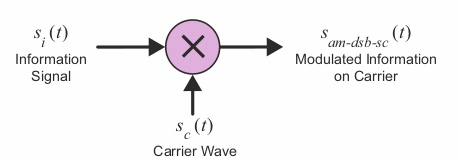
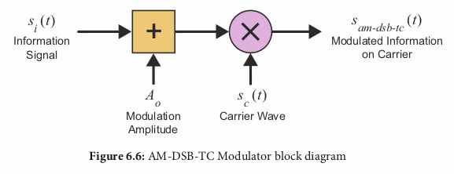
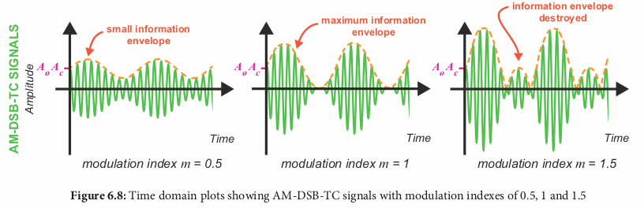
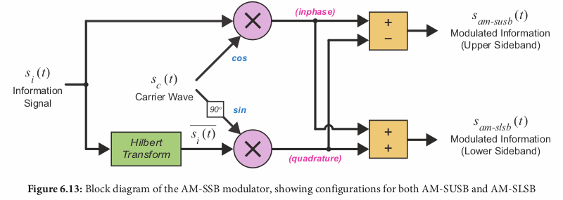
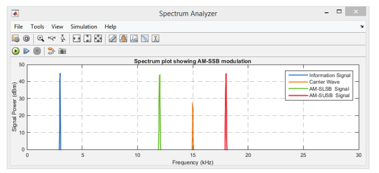
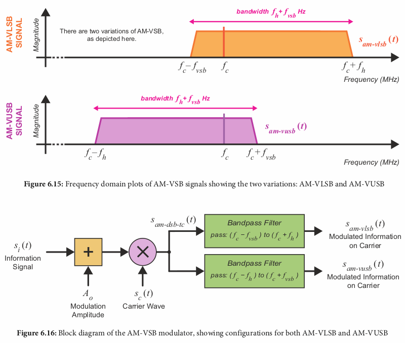
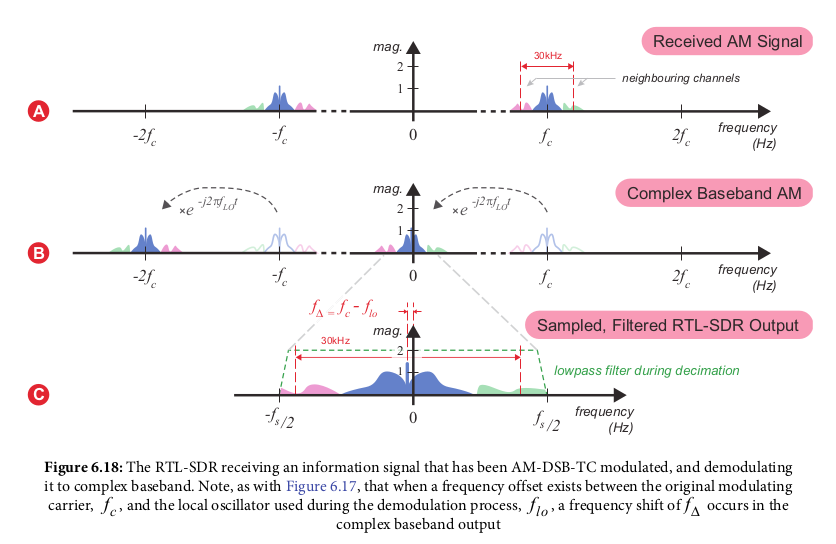
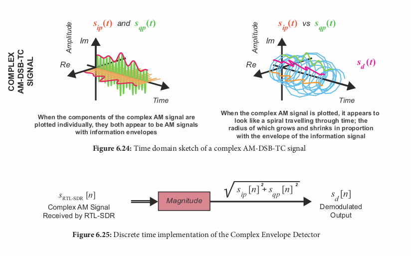

Chapter 6 - Amplitude Modulation (AM) Theory and Simulation
Mixes ("heterodynes") the information signal with a carrier signal,
called Double Sideband (AM-DSB). The information signal is "shifted up"
from baseband to a carrier frequency.
Two variations:
- Transmitted Carrier (AMD-DSB-TC)
- Suppressed Carrier (AMD-DSB-SC) (the one used in chapter 5)
AM-DSB-SC (Suppressed Carrier AM)

- Information signal has amplitude Ai, Frequency fi, si(t) = Ai*cos(2*pi*fi*t)
- Carrier signal has amplitude Ac, Frequency fc (higher than fi), sc(t) = Ac*cos(2*pi*fc*t)
- Modulated, ("heterodyned") signal sam-dsb-sc = Ai*cos(2*pi*fi*t)*Ac*cos(2*pi*fc*t)
- Simplified sam-dsb-sc = ((Ai*Ac)/2)*(cos(wc-wi)*t + cos(wc+wi)*t), where
- wc = 2*pi*fc
- wi = 2*pi*fi
- If the information signal had a bandwidth of fh Hz, the result modulated signal
has a bandwidth of 2*fh Hz
AM-DSB-TC (Transmitted Carrier AM)
- supressed carrier AM require "sophisticated coherent demodulators"
- Transmitted Carrier AM allows use of "non-coherent demodulators"
Information signal si(t) plus DC offset Ao is multiplied with carrier sc(t),
result is sam-dsb-tc(t) = [Ao + si(t)] * sc(t)
= Ao*Ac*cos(wc)*t + (AiAc/2)(cos(wc - wi)t + cos(wc + wi)t)

Alternative representation uses AM modulation index 'm':
- Ao*Ac*cos(wc*t)+(Ao*Ac*m/2)(cos(wc - wi)t + cos(wc+wi)t)
- m = Ai/Ao
m can be expressed as a percentage. The max value of m which
preserves the information envolope is 1 (100%)

AM-SSB (Single Sideband AM)
Double Sideband AM uses twice the bandwidth of the information signal;
Single Sideband AM uses the same amount of bandwidth
Modulated signal is calculated via:
- Multipliy si(t) by the inphase carrier wave sc(t) (0 degrees phase, cosine)
- Hilbert transform si(t)
- From wikipedia: "The Hilbert transform has a particularly simple representation in the frequency domain: it imparts a phase shift of -90° to every Fourier component of a function. For example, the Hilbert transform of cos(wt), where w>0, is cos(wt - pi/2)"
- multiply the output of hilbert(si(t)) by
quadrature version of sc(t) (90 degree phase, sine)
- Subtract the outputs of the I/Q multiplications for ssusb(t),
or add them for sslsb(t)
The results are:
- sam-slsb(t) = AiAc * cos(wc + wi)t
- sam-susb(t) = AiAc * cos(wc - wi)t
In the diagram, only one of the outputs is used; it just shows both options
for either upper sideband (susb) or lower sideband (slsb)

The difference between the upper and lower sideband modulations
is that the modulated signal for lower sideband is to the left (lower)
of the carrier frequency while the modulated upper sideband is to
the right (higher) of the carrier frequency:

AM-VSB (Vestigial Sideband AM)
Uses a bandpass filter (BPF) on Transmitted Carrier (TC) AM to further
reduce bandwidth. The reduced width sideband is called a Vestigial Sideband
The modulated signal is BPF([Ao + si(t)]sc(t))

Theoretical AM Demodulation
To demodulate an AM signal, it must be multiplied with the EXACT frequency and phase
which was used as the carrier signal; however it is unlikely that these exactly match
on the receiving end
RTL-SDR demodulation
The signal the RTL sdr uses to get its IQ samples from, when receiving AM-DSB-TC signals is:
- sRTL-SDR(t) = LPF[sam-dsb-tc(t)*e-jwlot]
- e-jwlot is a complex oscillator inside the RTL-SDR (wlo
is the local oscialltor frequency*2pi)
- which can be expressed using ejwt = cos(wt) + jsin(wt)
- = cos(wlot) - jsin(wlot)
However, this assumes the oscillator frequency exactly matches the carrier
frequency. This there is an additional frequency offset used in actual
demodulation

Non-coherent AM demodulation (for dsb-tc AM)/Envolope Filter
Simplest non-coherent demodulator is the "envelope detector":
a lowpass filter which smooths gaps between the pearks of the carrier wave
Digital, software implementation is as follows:
- Saturate the real component of complex input (saturates negative amplitude to 0)
- Send the saturated output through a low pass filter
This way however will struggle if the carrier frequency is low
Optimized version is as follows:
- Convert the amplitude to magnitude (converts negative amplitudes to positive, sqrt(real_component**2))
- Send the saturated output through a low pass filter
Complex Envolope Filter
No low pass filter required; converts both the in-phase and quadrature
components of the complex input signal to magnitude. This is the equivalent
of the radius between the two signals between the I and Q plane:
- demodulated out = sqrt(si(n)**2 + sq(n)**2)
- = |si(n) + jsq(n)|
This is the most optimized version; recommends using
